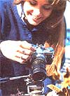
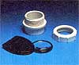
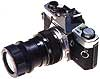
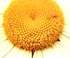
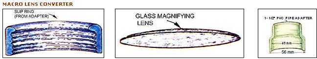
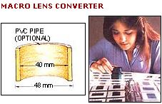

You don't need expensive equipment to peer into the world of larger-than-life photography!
If you read nature or science magazines, you've probably marveled at the incredible close-up photos that professionals take of tiny insects, flowers, printed circuits, and a myriad of other minuscule subjects. Those pictures were shot with a macro lens, which is designed to cast a magnified-or close-up-image onto film.
Macro lenses are sold in a wide range of focal lengths, with mounts to fit just about any single-lens-reflex (SLR) camera ever made. The devices vary in power and other features, but all have one thing in common: They're expensive. If you're a pro-or rich-you might be able to justify the cost. But for those of us with limited funds who simply want to dabble in close-up photography, multihundred-dollar price tags don't make sense.
As an alternative, camera shops sell somewhat more economical ( and less effective) items called "supplementary close-up lenses" or "plus lenses". Basically, they're magnifying glasses that you screw directly onto a regular lens, just as you would a photographic filter. But even those accessories can cost upwards of $30 . . . and that's a lot more than you'll need to put together my homemade "macro/close-up" lens!
SIMPLICITY ITSELF!
Believe it or not, to make this camera attachment you'll need only [1] a small, round 2X to 4X magnifying glass about 1-3/4" in diameter (be sure to get one with a glass lens, as plastic isn't good enough for your purposes) ... [2] a PVC slip-ring pipe adapter (1-1/2" PVC to 1-1/2" male) . . . and [3] a can of flat-black spray paint.
Coin and stamp shops are good sources for usable magnifying glasses. The kind that swings around into its own cover when not in use is excellent and should be available for just a few dollars. And, of course, just about any hardware or plumbing supply store is likely to carry the PVC pipe adapters you'll need.
To assemble the device, screw the slip ring off the adapter and give both parts a coat of flat-black paint inside and out (this will eliminate unwanted light reflections). Then remove the glass lens from its plastic frame . . . place it into the adapter's slip ring . . . and screw the ring back onto the pipe. Presto! You've just made yourself a super-low-cost photographic magnifier.
Exactly how you'll go about mounting the macro converter onto your camera will depend on the diameter of your standard lens. I've found that when I file the outside of the adapter's female end, it fits perfectly into a 55 mm filter ring. Or I can slip it snugly over the 49 mm lens on my other camera. And as you can see from the accompanying illustration-which shows the dimensions of the converter's parts in millimeters-slipping a short length of 1-1/2" PVC pipe onto the device's open end will allow you to use the close-up attachment with lenses as small as 40 mm or so! (Incidentally, if filing the adapter or pipe doesn't provide an acceptable fit-or if you want a more "permanent" arrangement-you can glue a used filter ring, cutout lens cap, or sunshade ring of the appropriate size right into the adapter or pipe and then screw that attachment onto your standard lens.)
USING YOUR HOMEMADE MACRO LENS
The bane of every close-up photographer is the fact that as magnification increases, the depth of field-that is, the area in a photo that can be sharply focused on film-decreases.
Fortunately, you can offset this effect somewhat by bringing into play another basic photographic principle: Depth of field can be increased by reducing the aperture (or f-stop) setting.
This, however, brings yet another factor into the act: By "stopping down" your camera, you'll reduce the amount of light that can reach the film . . . and the most convenient way to counteract that is to use a slower shutter speed.
But in true one-thing-leads-to-another fashion, a slower shutter speed also produces a problem: Since the film is exposed to the image for a longer period of time, any movement of the camera can blur the resulting photo. And the best way to overcome that particular dilemma is to use a rocksteady support of some kind, such as a tripod (my wife uses one made from a discarded snare drum stand!).
Remember, then, that to take photos successfully with your macro lens, you'll need to pay particular attention to all those fac tors: depth of field, aperture setting, shutter speed, and support. They're crucial in close-up work, and they demand a certain amount of patient attention on your part.
So when you've found an interesting subject, look through your camera and position the end of the macro converter three or four inches from the object. After moving the converter back and forth until your "model" comes into clear view, adjust your tripod so the entire camera stays firm in that nearly focused position. Fine-tune the focus by turning the ring on the main lens until the image is sharp at a point about half of its depth (assuming, that is, that you're working with a three-dimensional object). Then stop the camera's aperture down to the maximum (or to a setting that gives you a satisfactory depth of field), adjust the shutter speed according to the camera's meter reading, and shoot your picture. (You'll probably find it best to use a cable release to squeeze the shutter-to avoid shaking the camera-but if you don't have one, the auto-timer that most SLR's now have will work just as well.)
For flash photography with the converter, you'll need to take the electronic flash unit off your camera and hold it above the subject . . . or bounce the light off a hand-held white card or mirror onto the item. Be careful not to deflect the flash back into the lens, though, or you'll overexpose the film.
NOT BAD FOR THE PRICE!
This low-budget lens not only will produce surprisingly good close-up photos, but also will serve as a handy slide viewer! Just slip the converter off your camera, hold a mounted transparency against the open end of the tube, aim the tube at a bright light or window, and take a look: You'll see your slide look big, bright, and sharp . . . without the help of batteries!
Of course, I don't claim that this little $5 (or less!) gizmo is as effective as a $200 (or more!) "real" macro attachment. A storebought lens allows you to use much smaller aperture settings, which give you a better depth of field, and doesn't produce the vignetting -slightly out-of-focus, or "soft", areas around the perimeter of a photo-that the homemade model often yields.
But still, my humble invention can introduce you to an enjoyable hobby . . . a pastime that will give you a new perspective on your surroundings. The environment is full of natural wonders that we look at every day but never really see. For example, I'd never known that the center of a daisy is arranged in a lovely spiral pattern . . . until the day that I focused my lens on one!
A PVC pipe turned macro-converter most certainly isn't the ultimate in sophisticated optical equipment. But you won't find a less expensive ticket to the amazing world of close-up photography . . . and believe me, the show shouldn't be missed!
EDITOR'S NOTE: An excellent source of information on this subject is The Manual of Close-Up Photography by Lester Lefkowitz (Watson-Guptill Publications, $12.95), available in most libraries and bookstores.
|
 Ideal for nature photos, the lens is made from. |
 a magnifying glass and a PVC pipe section. The end product |
 mounts on most 35 mm cameras, takes good close-ups |
|
 can double as a slide viewer! |
 |
 |